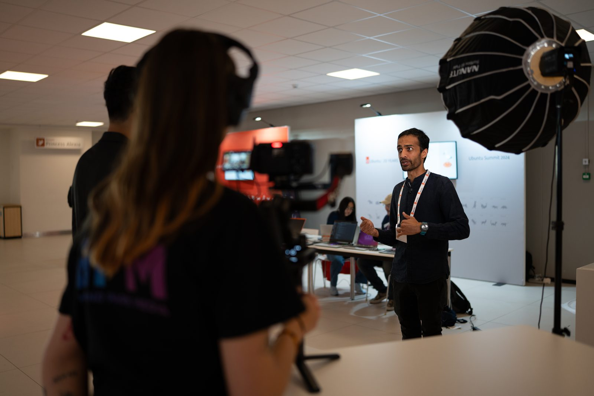
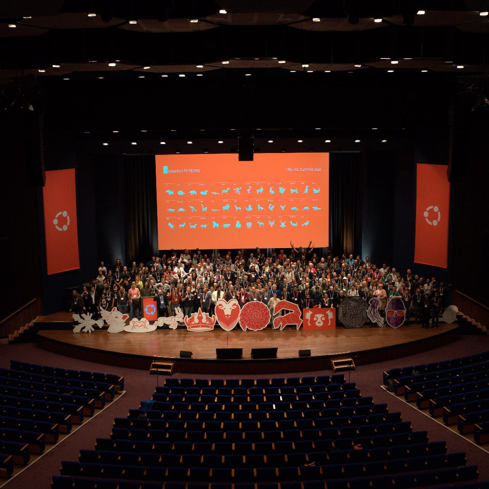

284 → 946
Media mentions
Meltwater · 2022 vs 2024
Ubuntu Summit is Canonical's flagship gathering of contributors, developers and community. In 2022 it was a real event and a modest media moment - the coverage happened, then it passed. Over three editions I ran the same editorial plan with more sophistication each year, and the earned media grew with it: from $518,810 to $7,930,540 AVE, per Meltwater's mention exports for Summit 2022 and 2024. Every number on this page names its analytics export.
The default failure mode is documentation: recap photos and a keynote recording that disappear within 24 hours and leave no lasting organic footprint. That was the pattern when I took over the Summit's social and content strategy in 2022 - the event happened, some posts went out, and the moment passed with nothing compounding behind it.
So I set a different brief. Treat a 3-day event as a content production, not a thing to be documented, and make it generate sustained earned media for weeks on either side of the dates.

The plan kept its shape year to year and got sharper each time: the same three phases, run tighter.
A live Framework Laptop RISC-V hacking session became Canonical's second-highest-performing YouTube video of 2024 - 34,678 views · 1,120 watch-hours · 456,821 impressions · 4.56% CTR, all organic - because it served real developer curiosity rather than product promotion. YouTube uploads 2024 export
NEEDS_HUMAN: public YouTube link to the Framework RISC-V session

Ubuntu Summit earned media · 2022 vs 2024
Source: Meltwater mention exports, Summit 2022 and 2024
Mentions
+233%
Total reach
15.3×
AVE
15.3×
Engagement
+670%
| Metric | 2022 | 2024 | Source |
|---|---|---|---|
| Media mentions | 284 | 946 | Meltwater |
| Total reach | 56,087,571 | 857,355,723 | Meltwater |
| AVE | $518,810 | $7,930,540 | Meltwater |
| Engagement | 1,037 | 7,986 | Meltwater |
| Max single-mention reach | 8,693,654 | 127,227,100 | Meltwater · 14.6× |
| Media features | - | 70+ (2022 - 2024) | Meltwater |
| Summit-tag social | - | 84 posts · 618,704 impressions · 9.4% ER · LinkedIn 15.53% | Sprout tag CSV · Apr 2024 - Apr 2025 |
Some of that 15x is the event itself growing - more speakers, a bigger venue - and I won't pretend the strategy did all of it. What it isolably added is the sustained social engagement rate and the video programme, and those calls were mine. AVE, too, is a contested metric in PR, which is why I lead with the mention, reach and engagement counts - they are the harder numbers.
NEEDS_HUMAN: negative sentiment rose 0.4% → 3.9% as volume grew - story behind the shift